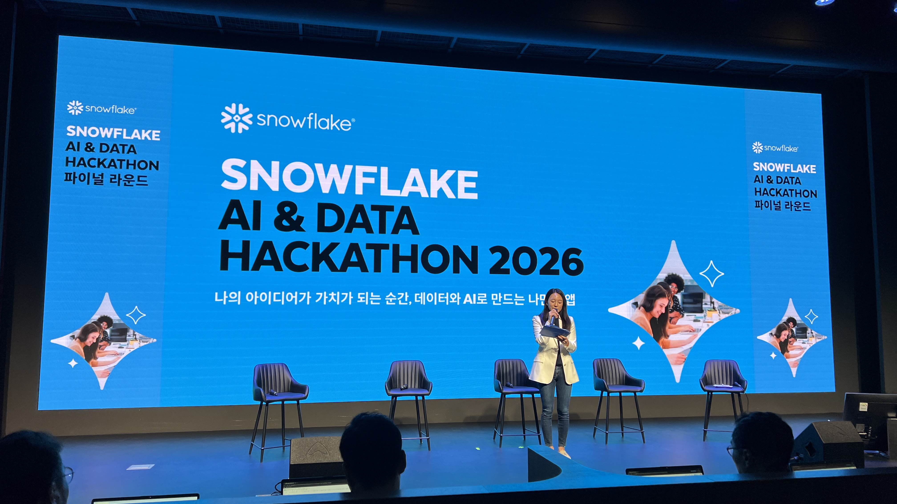
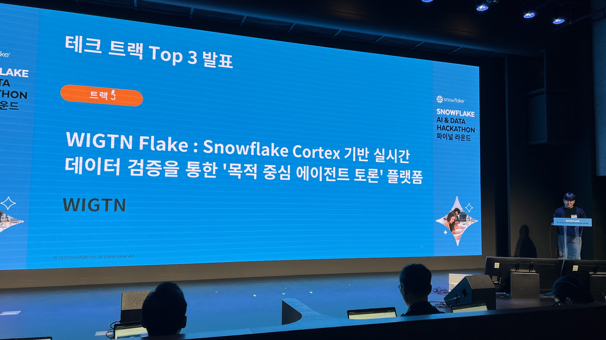
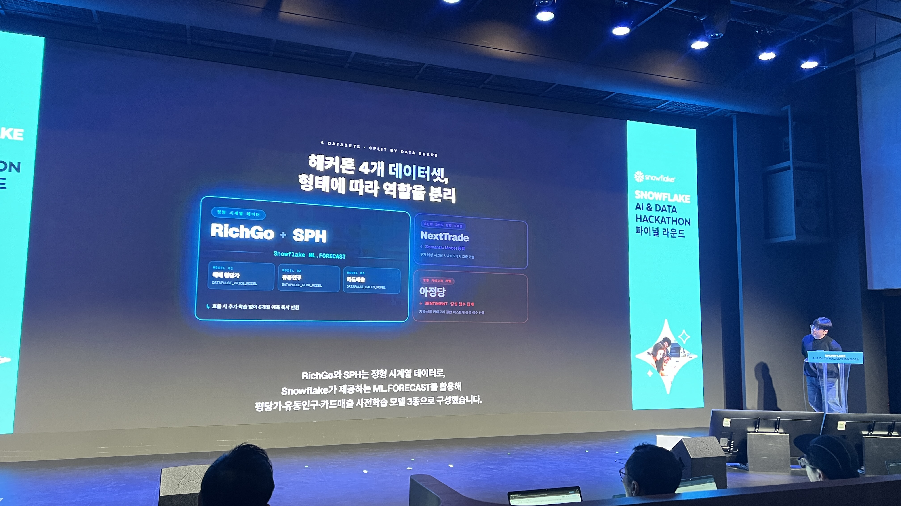
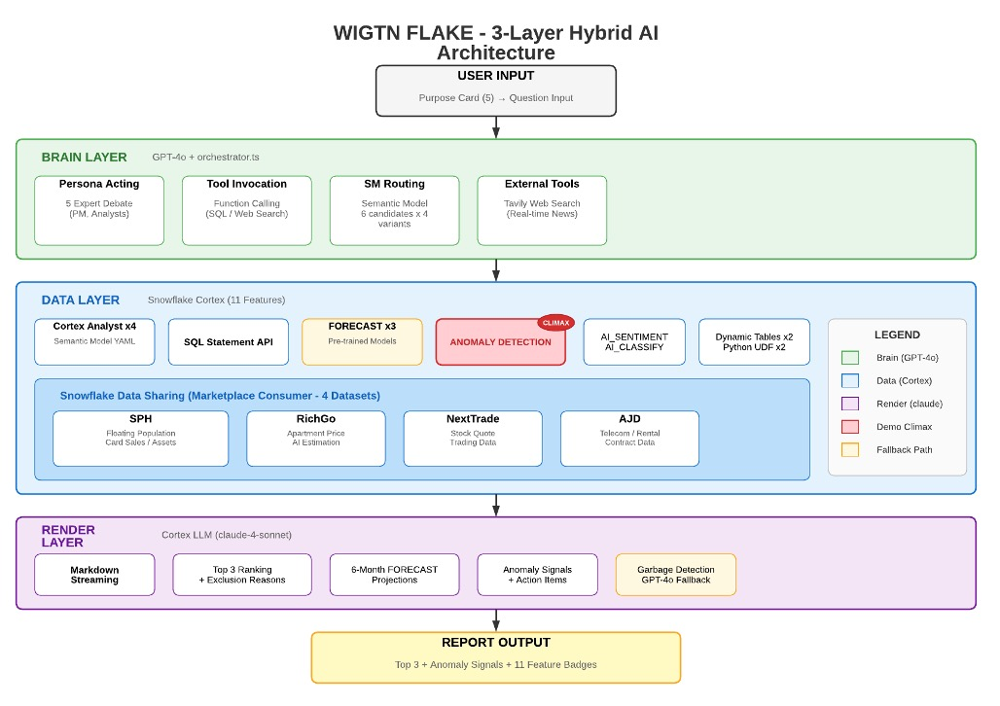

WIGTN FLAKE — 목적 기반 동네 인텔리전스 플랫폼
Snowflake AI & Data Hackathon Korea 2026 Tech Track 출품작. WIGTN Crew 4인 합작, 2등(은상) 수상.
11종 Snowflake Cortex 기능 + 4개 데이터셋을 모두 라이브 연동한 데모.
Overview
"하고 싶은 일을 고르면, 다섯 명의 AI 전문가가 토론해서 데이터로 증명된 Top 3 동네를 추천한다."
일반 공공데이터 대시보드는 서술형 질문("역삼동 유동인구는?")에는 답하지만 의사결정 질문("어디에 카페를 열어야 하나?")에는 답하지 못합니다. WIGTN FLAKE는 사용자의 목적을 출발점으로 삼아 부동산·유동인구·카드매출·통신계약 4개 데이터셋을 교차 분석하고, Snowflake Cortex × GPT-4o 하이브리드 오케스트레이션으로 5명의 AI 전문가 패널이 실시간 토론 끝에 Top 3 추천 + 이상 시그널 자동 감지 + 6개월 트렌드 예측을 제공합니다.
주요 성과
- 🥈 Snowflake AI & Data Hackathon Korea 2026 — Tech Track 2nd Place
- Snowflake Cortex 11종 기능 라이브 통합 — Agent · Analyst×4 · LLM · FORECAST · ANOMALY_DETECTION · AI_SENTIMENT · AI_CLASSIFY · data_to_chart · Dynamic Tables · Python UDFs · Semantic Model
- 4개 데이터셋 모두 라이브 연동 — SPH(SKT 유동인구·신한카드·KCB 소득) · RichGo(부동산 시세) · NextTrade(증권 호가) · 아정당(통신계약)
- 3-Tier Fallback 아키텍처 — Cortex Agent → Direct Analyst+GPT-4o Function Calling → GPT-4o Pure Inference
- 5종 목적 프리셋 + 자유 입력 — 카페 창업 · 렌탈가전 마케팅 · 광고판 입지 · 부동산 투자 · 상권 이상 감지
- Cortex LLM 한국어 마크다운 리포트 — 17.3초 / 1,657자 벤치마크
데모 & 링크
- 데모 비디오: YouTube (10분)
- 프로젝트 페이지: wigtn.com/projects/wigtn-flake
- 보도: 뉴스와이어
Hackathon — Top 3 발표 현장

1. Tech Track Top 3 발표 — "WIGTN Flake : Snowflake Cortex 기반 실시간 데이터 검증을 통한 '목적 중심 에이전트 토론' 플랫폼"
2. 발표 슬라이드 — 4개 데이터셋(RichGo+SPH · NextTrade · 아정당)을 형태에 따라 역할 분리, Snowflake ML.FORECAST 사전학습 모델 활용문제 인식 — 왜 기존 대시보드는 결정을 못 내리는가
목적이 빠진 도구
유동인구는 광고주에게는 중요하지만 카페 창업에는 부적합하고, 소득 데이터는 렌탈가전에는 적합하나 광고판 입지에는 무관합니다. 같은 지표라도 목적에 따라 해석이 달라야 의사결정으로 이어지는데, 기존 대시보드는 목적과 무관한 평면적 수치를 제공할 뿐입니다.
단일 관점 AI
기존 LLM 도우미는 "그럴듯한 문단"을 만들지만 토론도, 반대 의견도, SQL 트레일도 없습니다. 의사결정에는 다관점 검증이 필요합니다.
데이터 수동 통합
부동산 × 유동인구 × 카드매출 × 통신계약은 각자 다른 도구에 흩어져 있어, 단일 의사결정을 위해 스프레드시트 작업이 수 주 걸립니다.
Architecture — 5단계 흐름이 사용자에게 그대로 보임
- Purpose Selection — 6개 프리셋 카드(카페 · 렌탈가전 · 광고판 · 투자 · 이상 감지 · 자유) 또는 자유 입력
- District Context — AI가 후보 동네를 제안, 목적+동네가 한 쌍의 brief로 묶임
- Expert Orchestration — GPT-4o Summoner가 5명의 목적 특화 페르소나를 실시간 소환, SSE로 토론 스트리밍
- Cortex Execution — 4개 Semantic Model을 Cortex Analyst text-to-SQL로 질의, ANOMALY_DETECTION + FORECAST 병렬 실행, 결과는 웨어하우스에서 수렴
- Decision Report — Top 3 랭킹 + 이상 시그널 배지 + 6개월 예측 + 목적별 액션 체크리스트

Snowflake Cortex × GPT-4o 하이브리드 전략
| 계층 | 모델 | 선택 이유 |
|---|---|---|
| 오케스트레이션 | Cortex Agent (claude-4-sonnet) | Native text-to-SQL + Semantic Model 통합 |
| 리포트 생성 | Cortex LLM (claude-4-sonnet) | 스트리밍 + 한국어 long context |
| 토론 페르소나 | GPT-4o | 다중 에이전트 페르소나 안정성, Function Calling |
| Fallback | GPT-4o | 토큰 깨짐 감지 시 자동 전환 |
3-Tier Fallback 아키텍처
- Tier 1: Cortex Agent → Cortex Analyst × 4 (정상 경로)
- Tier 2: Direct Analyst + GPT-4o Function Calling (Agent 실패 시)
- Tier 3: GPT-4o Pure Inference (안전망)
Datasets — 4종 모두 라이브 연동
| 제공처 | 데이터셋 | 커버리지 | 기간 |
|---|---|---|---|
| SPH | SKT 유동인구 + 신한카드 + KCB 소득 | 서초·영등포·중구 | 2021–2025 |
| RichGo | 아파트 AI 시세 (매매/전세) | 동일 3개구 | 2012–2024 |
| NextTrade | 주식 호가/체결/프로그램매매 | 전 상장 | 실시간 |
| 아정당(AJD) | 통신계약 + GA4 + 콜센터 + 렌탈 | 전국 | 2024– |
Snowflake Cortex 11종 기능 활용
- Cortex Agent — 목적 기반 cross-query 오케스트레이션
- Cortex Analyst × 4 — Semantic Model별 자연어→SQL
- Cortex LLM — 스트리밍 마크다운 리포트 생성
- FORECAST — 6개월 예측 (3개 사전학습 모델)
- ANOMALY_DETECTION — "주목 동네" 배지 자동 주입 (데모 클라이맥스)
- AI_SENTIMENT — 콜센터·뉴스 감성 가중치
- AI_CLASSIFY — 성장/안정/쇠퇴 분류
- data_to_chart — Top 3 비교 차트 자동 생성
- Dynamic Tables × 2 —
DT_DISTRICT_HEALTH,DT_DISTRICT_DNA - Python UDFs × 2 — Decoupling Index, Similarity, Purpose-fit Score
- Semantic Model YAML × 4 — 데이터셋별 정의로 Cortex Analyst 정확도 확보
5가지 실제 Use Case
| 목적 | 사용자 | 핵심 데이터 | 의사결정 |
|---|---|---|---|
| 🍰 카페·식당 | 소상공인 | 유동인구 × 커피매출 × 소득 | 창업 입지 |
| 📦 렌탈가전 광고 | B2B 마케터 | 통신 신규개통 + 소득 + 이주 | 광고비 배분 |
| 📣 광고판 입지 | 프랜차이즈 마케터 | 시간대별 유동인구 × 카드매출 | ROI 최적화 |
| 💰 부동산 투자 | 개인/법인 | RichGo 시세 + FORECAST + 성장률 | 매수 시점·입지 |
| 🚨 상권 이상 감지 | 기존 운영자 | ANOMALY_DETECTION (매출/유동/통신) | 피벗 시점 |
Demo Flow — 10분 비디오 구조
- 목적 카드 선택
- 동네 컨텍스트 입력 (AI 제안 또는 수동)
- SSE로 5명 전문가 입장·퇴장·타이핑 인디케이터 라이브 표시
- FORECAST + ANOMALY_DETECTION 병렬 쿼리 실행
- 클라이맥스: 이상 시그널 배지가 랭킹에 자동 주입
- 최종 Top 3 카드 + 6개월 트렌드 차트 + 액션 체크리스트
Engineering Principles
- Purpose-first design — UX부터 코드까지 모든 컴포넌트가 목적 컨텍스트를 들고 다님
- Hybrid AI — 데이터/SQL/리포트는 Cortex, 토론 페르소나는 GPT-4o. 계층별 최적 모델 선택
- Snowflake as lead role — 11종 Cortex 기능을 데모 전반에 자연스럽게 짜 넣음 (체크리스트가 아닌 흐름)
- 4개 데이터셋 모두 라이브 — Semantic Model로 묶고 데모 중 실제 쿼리
- Demo-first approach — 10분 비디오에서 ANOMALY_DETECTION을 클라이맥스로 배치
- Code reuse — Build with TRAE Seoul 위너 WIGENT의 오케스트레이터/채팅 ~90% 재사용
- Honest engineering — 슬라이드 주장과 코드가 일치, 의사결정은 벤치마크 기반
Tech Stack
Frontend
- Next.js 16 + React 19 + TypeScript 5.9
- Tailwind CSS 4 + Framer Motion 12
- Vega-Lite 6 (데이터 시각화)
- Server-Sent Events (SSE) 네이티브 스트리밍
Data & AI
- snowflake-sdk 1.15
- OpenAI SDK 6 (GPT-4o, Cortex LLM)
- Tavily (웹 검색)
- 국토교통부 실거래가 API
Snowflake
- Cortex Agent · Analyst · LLM (claude-4-sonnet)
- FORECAST · ANOMALY_DETECTION · AI_SENTIMENT · AI_CLASSIFY · data_to_chart
- Dynamic Tables × 2 · Python UDFs × 2 · Semantic Model YAML × 4